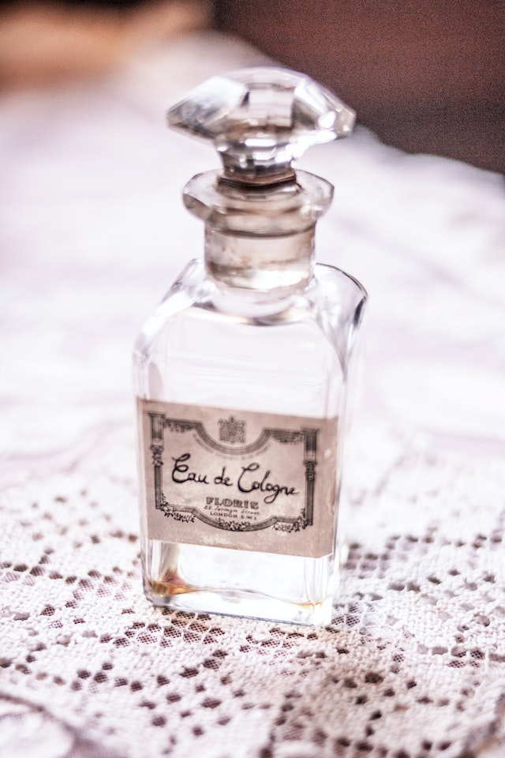

Quem somos?
Somos a empresa Flowrish, surgimos no ano de 2017, a partir da ideia de quatro meninas formadas técnico em administração na escola técnica estadual de Santa Cruz - FAETEC, para um projeto escolar. Nosso intuito é oferecer a oportunidade de despertar a autoestima e o que há de sensual através dos nossos perfumes com alta qualidade e uma duração na pele.
Produto
Perfumes em duas fragrâncias distintas, uma mais suave para dias mais leves e outra mais forte para dias de grande importância.
